Analisis Exploratio: Tasa estandarizada de mortalidad por cáncer de mama
ANÁLISIS DE EXPLORACIÓN DE DATOS
Tasa estandarizada de mortalidad por cáncer de mama
En el siguiente trabajo vamos a realizar un análisis exploratorio de datos sobre “la mortalidad de cáncer de mama en la provincia de Neuquén”. El objetivo es analizar la distribución temporo-espacial de la mortalidad por cáncer de mama en la provincia de Neuquen (Argentina) en el periodo 2009 - 2019, y a su vez, identificar sus principales determinantes en el contexto de las transiciones demográficas y sanitarias.
Para esto, estudiamos una base de datos que contiene 224 observacioes correspondientes a distintas Áreas programa (AP) y Zonas Sanitarias (ZS) de la provincia a lo largo del tiempo.
Variable objetivo: TME (Tasa de mortalidad por cáncer de mama estandarizada por 100.000 mujeres)
Demográfica y socioeconomicas: IE (Índice de Envejecimiento), IDE (Índice de Dependencia Económica), TN (Tasa de Natalidad).
Recursos y capacidad del sistema de salud: M (Densidad de médicas/os), E (Densidad de enfermeros/as), O (Porcentaje de camas ocupadas).
Uso y demanda del servicio: G (Atención por guardia), C (Consultas por habitante).
ANÁLISIS EXPLORATORIO DE DATOS (EDA):
1) Descargamos algunas librerías necesarias para realizar el análisis.
library(readxl) #leer los datos desde Excellibrary(dplyr) #Manipular datos
Adjuntando el paquete: 'dplyr'
The following objects are masked from 'package:stats':
filter, lag
The following objects are masked from 'package:base':
intersect, setdiff, setequal, union
── Conflicts ────────────────────────────────────────── tidyverse_conflicts() ──
✖ dplyr::filter() masks stats::filter()
✖ dplyr::lag() masks stats::lag()
ℹ Use the conflicted package (<http://conflicted.r-lib.org/>) to force all conflicts to become errors
# A tibble: 6 × 14
ID id_efector ZS AP Año TME IE IDE TN M E O
<dbl> <dbl> <chr> <chr> <dbl> <dbl> <dbl> <dbl> <dbl> <dbl> <dbl> <dbl>
1 1 1 I Centen… 2010 1.81 27.0 48.4 22.3 15.5 28.2 45.5
2 2 3 I Senill… 2010 0 26.7 48.4 19.2 8.1 23 20.4
3 3 5 I SPCH 2010 0 11.9 54.6 23.9 9.9 22.5 26.5
4 4 33 II Zapala 2010 0.647 25.2 52.7 22.8 23.4 35.2 41.3
5 5 40 II Aluminé 2010 3.33 20.8 53.0 22.1 13.1 35.9 22.1
6 6 36 II Bajada… 2010 0 23.1 58.1 25.4 19 50.7 5.18
# ℹ 2 more variables: G <dbl>, C <dbl>
TME: Tasa estandarizada de mortalidad por cáncer de mama (por 100.000 mujeres)
IE: Índice de envejecimiento de la población
IDE: Índice de dependencia económica
TN: Tasa de natalidad
M: Densidad de médicas/os
E: Densidad de enfermeras/os
O: Porcentaje de camas ocupadas
G: Porcentaje de atención por guardia
C: Consultas recibidas por habitante
LIMPIAMOS LA BASE Y PREPARAMOS LAS VARIABLES:
Datos <- Datos %>%rename_with(trimws)Datos <- Datos %>%mutate(ZS =as.factor(ZS),AP =as.factor(AP), Año =as.integer(Año) )glimpse(Datos)
Rows: 224
Columns: 14
$ ID <dbl> 1, 2, 3, 4, 5, 6, 7, 8, 9, 10, 11, 12, 13, 14, 15, 16, 17, …
$ id_efector <dbl> 1, 3, 5, 33, 40, 36, 39, 35, 37, 34, 51, 55, 53, 59, 57, 52…
$ ZS <fct> I, I, I, II, II, II, II, II, II, II, III, III, III, III, II…
$ AP <fct> Centenario, Senillosa, SPCH, Zapala, Aluminé, Bajada del Ag…
$ Año <int> 2010, 2010, 2010, 2010, 2010, 2010, 2010, 2010, 2010, 2010,…
$ TME <dbl> 1.8114648, 0.0000000, 0.0000000, 0.6470487, 3.3329113, 0.00…
$ IE <dbl> 26.956797, 26.733193, 11.876958, 25.193636, 20.800333, 23.1…
$ IDE <dbl> 48.45, 48.43, 54.59, 52.70, 52.99, 58.12, 52.75, 58.31, 54.…
$ TN <dbl> 22.31, 19.17, 23.91, 22.82, 22.11, 25.35, 21.82, 24.80, 22.…
$ M <dbl> 15.5, 8.1, 9.9, 23.4, 13.1, 19.0, 14.2, 7.5, 9.1, 7.0, 17.5…
$ E <dbl> 28.2, 23.0, 22.5, 35.2, 35.9, 50.7, 47.4, 24.2, 34.7, 45.6,…
$ O <dbl> 45.54, 20.44, 26.48, 41.33, 22.06, 5.18, 20.48, 20.91, 20.6…
$ G <dbl> 54.6, 51.0, 55.3, 51.5, 38.2, 0.0, 41.0, 50.7, 45.3, 29.6, …
$ C <dbl> 3.5, 5.0, 4.1, 3.3, 4.5, 1.9, 3.9, 4.9, 4.4, 2.7, 4.2, 6.3,…
CONTROLAR CALIDAD DE LOS DATOS:
colSums(is.na(Datos))
ID id_efector ZS AP Año TME IE
0 0 0 0 0 0 0
IDE TN M E O G C
0 0 0 0 0 0 0
sum(duplicated(Datos))
[1] 0
#conocer cuantos ceros hay Datos %>%summarise(across(where(is.numeric),~sum(.x ==0) ) )
# A tibble: 1 × 12
ID id_efector Año TME IE IDE TN M E O G C
<int> <int> <int> <int> <int> <int> <int> <int> <int> <int> <int> <int>
1 0 0 0 125 0 0 0 1 0 3 13 0
Conclusión: Visualizamos que hay 125 ceros en la variable TME.
ESTADÍSTICA DESCRIPTICA:
Datos %>%select(TME, IE, IDE, TN, M, E, O, G, C) %>%summary()
TME IE IDE TN
Min. : 0.000 Min. : 1.381 Min. :45.86 Min. : 7.14
1st Qu.: 0.000 1st Qu.:20.294 1st Qu.:50.40 1st Qu.:15.07
Median : 0.000 Median :22.948 Median :52.70 Median :17.75
Mean : 1.791 Mean :22.542 Mean :52.60 Mean :17.99
3rd Qu.: 2.435 3rd Qu.:26.165 3rd Qu.:54.51 3rd Qu.:20.61
Max. :30.487 Max. :35.398 Max. :66.21 Max. :39.22
M E O G
Min. : 0.000 Min. :10.50 Min. : 0.00 Min. : 0.00
1st Qu.: 9.975 1st Qu.:29.55 1st Qu.:17.14 1st Qu.:39.17
Median :13.850 Median :37.70 Median :25.14 Median :50.50
Mean :14.794 Mean :42.98 Mean :29.67 Mean :47.29
3rd Qu.:19.300 3rd Qu.:53.20 3rd Qu.:41.78 3rd Qu.:59.12
Max. :35.900 Max. :99.20 Max. :79.37 Max. :87.50
C
Min. : 0.600
1st Qu.: 2.400
Median : 3.220
Mean : 3.363
3rd Qu.: 4.200
Max. :10.700
ANALIZAR DISTRIBUCIONES DE CADA VARIABLE:
Datos %>%select(TME, IE, IDE, TN, M, E, O, G, C) %>%pivot_longer(everything(),names_to ="Variable",values_to ="Valor" ) %>%ggplot(aes(x = Valor)) +geom_histogram(bins =20) +facet_wrap(~Variable, scales ="free") +theme_minimal()
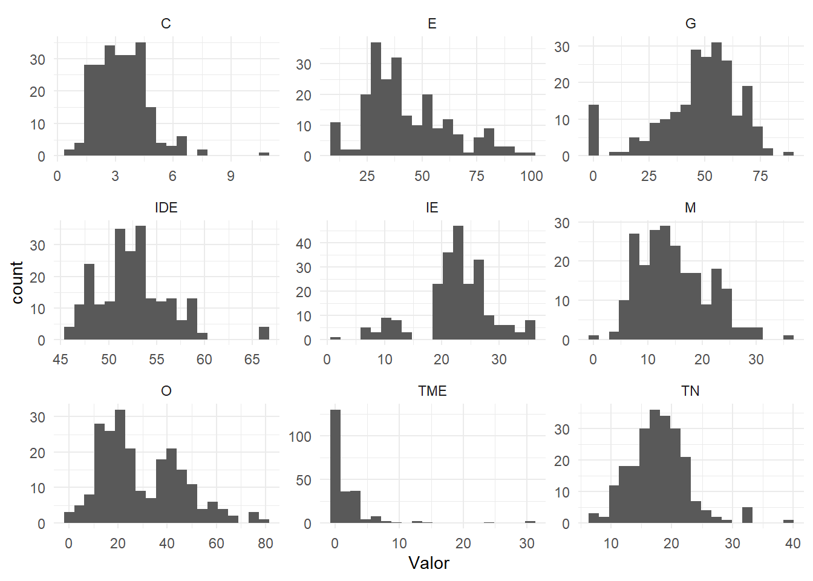
NOS CENTRAMOS EN UN PRIMER MOMENTO EN LA VARIABLE TME, LA VARIABLE DE RESPUESTA CENTRAL:
ggplot(Datos, aes(x = TME)) +geom_histogram(bins =20) +labs(title ="Distribución de la tasa de mortalidad",x ="TME",y ="Frecuencia" ) +theme_minimal()
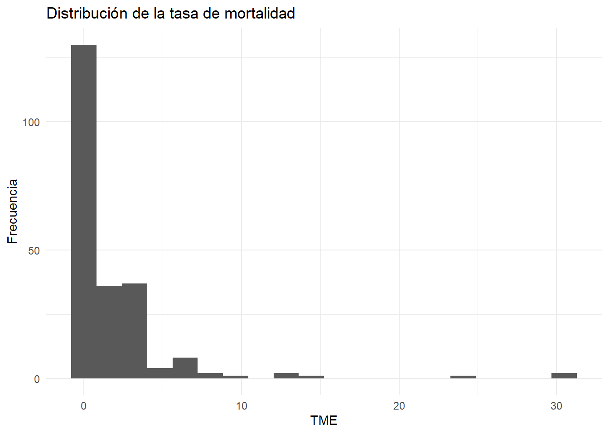
Conclusión: Como vimos anteriormente, hay 125 valores en cero y 99 datos distintos de cero. Por lo tanto, se muestra una fuerte asimetría hacia la derecha (positiva). TME no presenta una distribución simétrica ni aproxidamente normal.“la frecuencia disminuye a medida que aumenta la tasa. Hay valores considerablemente elevados, que generan una cola prolongada hacia la derecha”.
GRÁFICO BOXPLOT:
ggplot(Datos, aes(y = TME)) +geom_boxplot() +labs(title ="Boxplot de TME",y ="Tasa estandarizada de mortalidad" ) +theme_minimal()
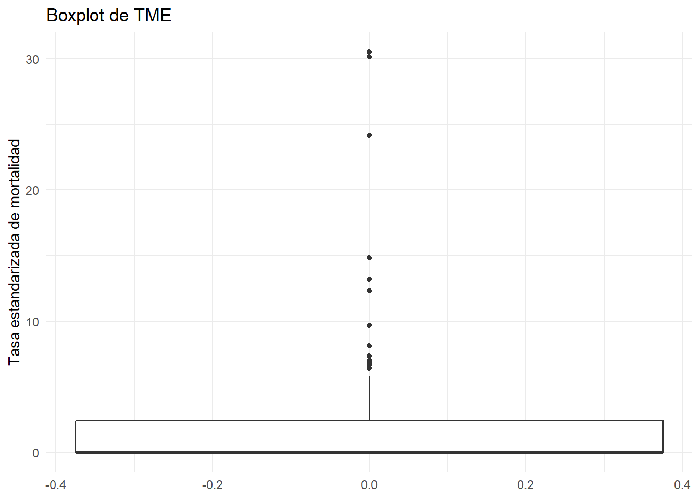
Conclusión: La caja está muy concentrada en valores bajos, porque la gran proporción de las observaciones tiene 0. Además, visualizamos varios datos atípicos, pero no significa que sean datos incorrectos ni que haya que eliminarlos. Pueden ser tasas reales correspondientes a determinadas áreas, zonas o años.
# A tibble: 6 × 11
ZS n TME_cero Porcentaje_cero Media Mediana DE Q1 Q3 Minimo
<fct> <dbl> <dbl> <dbl> <dbl> <dbl> <dbl> <dbl> <dbl> <dbl>
1 I 24 9 37.5 1.59 1.78 1.38 0 2.7 0
2 II 56 38 67.9 1.75 0 5.69 0 1.16 0
3 III 48 36 75 1.42 0 3.93 0 0.22 0
4 IV 32 13 40.6 1.44 1.23 1.81 0 1.96 0
5 V 48 28 58.3 2.2 0 3.79 0 2.97 0
6 VI 16 1 6.25 2.81 2.9 1.12 2.13 3.71 0
# ℹ 1 more variable: Maximo <dbl>
En esta tabla obtenemos para cada zona, no solamente media y mediana, sino también cuántos registros tienen TME = 0.
GRÁFICO BOXPLOT:
ggplot(Datos, aes(x = ZS, y = TME)) +geom_boxplot() +labs(title ="Distribución de TME según zona sanitaria",x ="Zona sanitaria",y ="Tasa estandarizada de mortalidad" ) +theme_minimal()
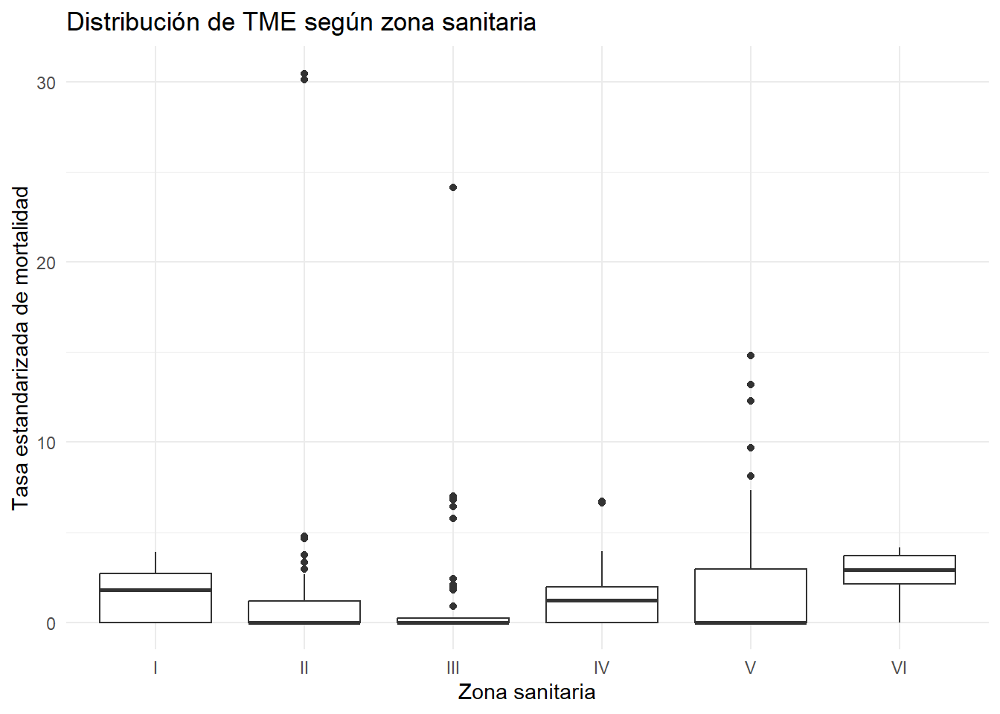
Conclusión: podemos visualizar lo siguiente
La Zona VI destaca porque su distribución está desplazada hacia valores más altos: la mediana está aproximadamente alrededor de 3 y, visualmente, prácticamente no aparecen valores iguales a cero.
En las Zonas II, III y V, en cambio, hay una presencia importante de valores iguales a cero. En particular, la Zona III tiene la caja muy concentrada cerca de cero, pero al mismo tiempo presenta varios valores elevados. Esto genera una distribución muy asimétrica.
La Zona V también presenta mucha variabilidad: combina valores iguales a cero con observaciones que alcanzan aproximadamente 15.
La Zona I parece más concentrada, aproximadamente entre 0 y 4, sin valores extremos tan elevados como otras zonas.
La Zona IV presenta valores centrales relativamente bajos, aunque aparece una observación elevada cercana a 7.
Además, los valores extremos más importantes aparecen en Zona II, con TME cercanas a 30, y Zona III, con una observación cercana a 24.
Recordar que:
Zona I: Centenario, Senillosa, SPCH
Zona II: Zapala, Aluminé, Bajada del Agrio, El Huecu, Las Lajas, Loncopue, Mariano Moreno.
Zona III: Chos Malal, Andacollo, Buta Ranquil, El Cholar, Las Ovejas y Tricao Malal.
Zona IV: SMA, Junin de los Andes, Las coloradas y Villa La Angostura.
Zona V: Cutral Co Plaza Huincul, Añelo, El Chocon, Picun Leufú, Piedra del Aguila y Rincon de los Sauces.
Zona VI: Neuquén y Plottier.
PORCENTAJE DE OBSERVACIONES CON TME IGUAL A 0 (CEROS) SEGÚN ZN:
Datos %>%group_by(ZS) %>%summarise(Porcentaje_cero =100*mean(TME ==0) ) %>%ggplot(aes(x = ZS, y = Porcentaje_cero)) +geom_col() +labs(title ="Porcentaje de observaciones con TME igual a cero",x ="Zona sanitaria",y ="Porcentaje (%)" ) +theme_minimal()
CONCLUSIÓN: En la zona III presenta la mayor proporción de registros con TME igual a cero: 75 %. Le siguen las zonas II (67,86 %) y V (58,33 %).
En el extremo opuesto aparece la Zona VI, donde solamente 6,25 % de las observaciones tienen TME igual a cero. Además, esta zona presenta la media más elevada (2,81).
La Zona V presenta la segunda media más elevada (2,20) y, como vimos en el boxplot, una dispersión considerable.
Hay algo interesante en la Zona II: aunque el 67,86 % de sus registros tiene TME igual a cero, su media es 1,75, superior a las de I, III y IV.
¿CÓMO EVOLUCIONA TME TEMPORALMENTE?
¿Cómo ha variado la Tasa Estandarizada de Mortalidad promedio a lo largo de los años en la provincia?
ggplot(TME_anual, aes(x = Año, y = Media)) +geom_line() +geom_point() +labs(title ="Evolución de la TME entre 2010 y 2017",x ="Año",y ="TME media" ) +theme_minimal()
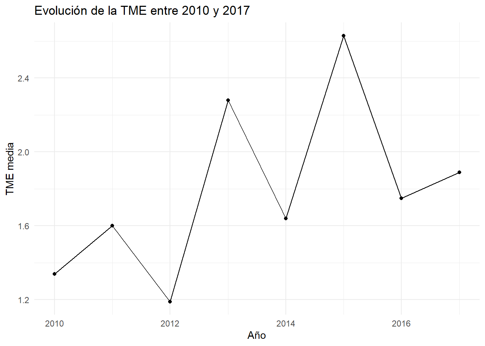
Conclusión: La TME media no presenta una tendencia continuamente creciente o decreciente. Hay fluctuaciones importante entre los años. Entre 2010 y 2012 la media pasa de 1,34 → 1,60 → 1,19, alcanzando en 2012 el menor valor del período. En 2013 aumenta considerablemente hasta 2,28, vuelve a disminuir en 2014 a 1,64 y alcanza su máximo en 2015, con 2,63. Luego disminuye a 1,75 en 2016 y finaliza en 1,89 en 2017.
Por lo tanto, descriptivamente, 2015 presenta la mayor TME media y 2012 la menor.
Y, dado que tu TME es muy asimétrica y tiene muchos ceros, no me quedaría solamente con la media. Hagamos también la mediana:
ggplot(TME_anual, aes(x = Año, y = Mediana)) +geom_line() +geom_point() +labs(title ="Evolución de la mediana de TME entre 2010 y 2017",x ="Año",y ="Mediana de TME" ) +theme_minimal()
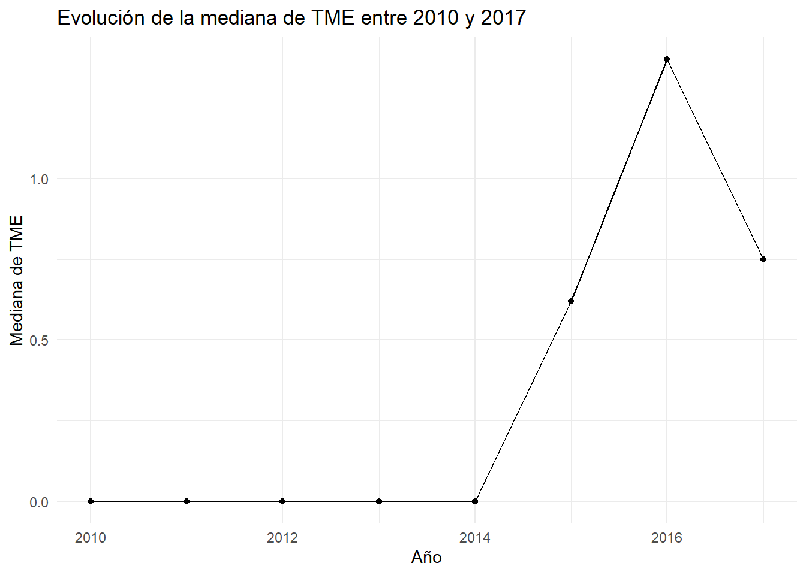
Conclusión: la mediana es 0 entre 2010 y 2014. Esto significa que durante esos años, al menos la mitad de las observaciones presentan TME igual a cero.
Esto coincide con la tabla de porcentajes. Por ejemplo:
2010: 57,14 % de ceros
2011: 64,29 %
2012: 64,29 %
2013: 53,57 %
2014: 71,43 %
2015: 50 %
2016: 39,29 %
2017: 46,43 %
A partir de 2015 cambia el comportamiento. La mediana aumenta aproximadamente a 0,6 en 2015, alcanza su mayor valor en 2016 (aprox. 1,4) y disminuye en 2017 (aprox. 0,75).
Esto se relaciona con una disminución en la proporción de registros con TME = 0, especialmente en 2016.
Media y mediana no cuentan exactamente la misma historia
En 2015, la media alcanza el máximo (2,63), pero la mediana es bastante menor. Eso indica que probablemente existen algunas TME altas que están elevando la media.
En cambio, 2016 tiene una media menor (1,75), pero presenta la mediana más elevada del período y el porcentaje más bajo de ceros (39,29 %).
Por eso no sería correcto concluir simplemente que “2015 fue el año con mayor mortalidad”. Lo que podemos afirmar descriptivamente es que 2015 presenta la mayor TME media, mientras que 2016 presenta la mayor mediana y la menor proporción de observaciones con TME igual a cero.
EVOLUCIÓN DE TME SEGÚN ZONA SANITARIA
TME_zona_anio <- Datos %>%group_by(Año, ZS) %>%summarise(TME_media =mean(TME),.groups ="drop" )ggplot(TME_zona_anio,aes(x = Año, y = TME_media)) +geom_line(linewidth =1) +geom_point(size =2) +facet_wrap(~ ZS, ncol =2) +scale_x_continuous(breaks =2010:2017) +labs(title ="Evolución de la TME según Zona Sanitaria",subtitle ="Período 2010-2017",x ="Año",y ="TME media" ) +theme_minimal()
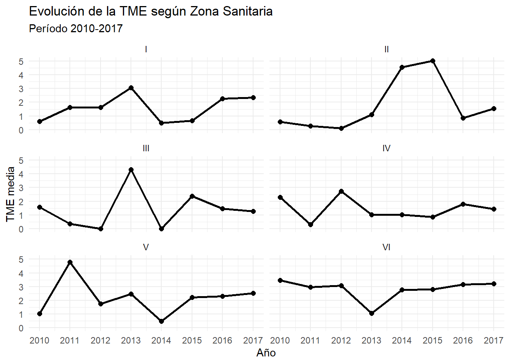
Conclusión: Evolución de la TME según Zona Sanitaria (2010–2017). La evolución temporal de la TME media presenta comportamientos diferentes entre las zonas sanitarias. Las zonas II, III y V muestran las mayores fluctuaciones durante el período. En la Zona II se destaca un incremento pronunciado durante 2014 y 2015; la Zona III presenta un pico importante en 2013; mientras que la Zona V alcanza su mayor valor en 2011. La Zona I muestra aumentos y disminuciones a lo largo del período, con un incremento destacado en 2013. La Zona IV presenta variaciones más moderadas, mientras que la Zona VI exhibe un comportamiento relativamente estable, excepto por una disminución marcada en 2013.
En términos generales, no se observa una evolución temporal común a todas las zonas sanitarias, sino patrones diferenciados según la zona.
¿QUÉ RELACIÓN TIENE EL ÍNDICE DE ENVECIMIENTO (IE) Y LA MORTALIDAD (TME)?
ggplot(Datos, aes(x = IE, y = TME)) +geom_point(alpha =0.6) +geom_smooth(se =FALSE) +labs(title ="Relación entre el índice de envejecimiento y TME",x ="Índice de envejecimiento (IE)",y ="Tasa estandarizada de mortalidad (TME)" ) +theme_minimal()
`geom_smooth()` using method = 'loess' and formula = 'y ~ x'
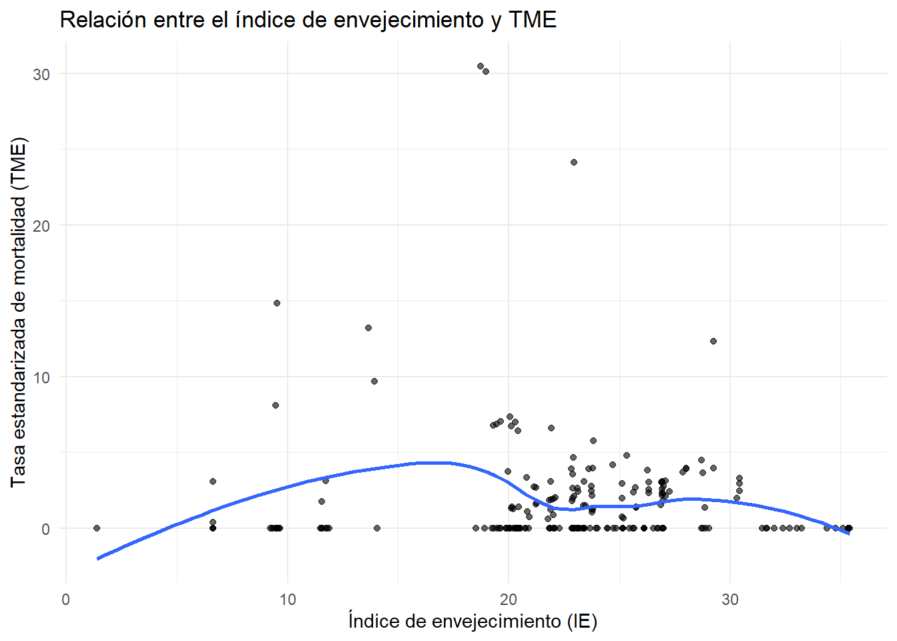
Conclusión: Podemos visualizar que hay una tendencia a aumentar TME cuando aumenta el índice de enjeximiento, pero luego empieza a bajar. No olvidemos que TME tiene varios ceros.
¿QUÉ RELACIÓN TIENE TME CON CADA UNA DE LAS DEMÁS VARIABLES CUANTITATIVAS?
Datos %>%select(TME, IE, IDE, TN, M, E, O, G, C) %>%pivot_longer(cols =c(IE, IDE, TN, M, E, O, G, C),names_to ="Variable",values_to ="Valor" ) %>%ggplot(aes(x = Valor, y = TME)) +geom_point(alpha =0.6) +facet_wrap(~ Variable, scales ="free_x") +labs(title ="Relación entre TME y las variables cuantitativas",x ="Valor de la variable",y ="TME" ) +theme_minimal()
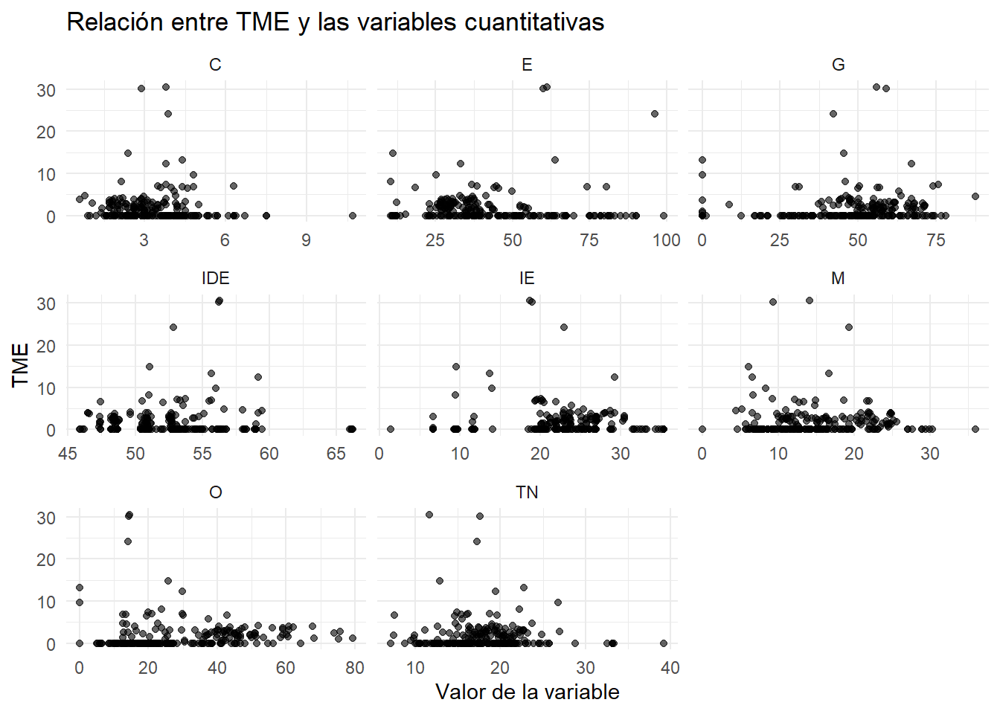
CORRELACIÓN:
Acá vemos la relación que hay entre la mortalidad (TME) y los recursos del sistema de salud/variables demográficas.
variables_interes <- Datos %>%select(TME, IE, IDE, TN, M, E, O, G, C)ggcorr(variables_interes, label =TRUE, label_round =2, name ="Correlación")
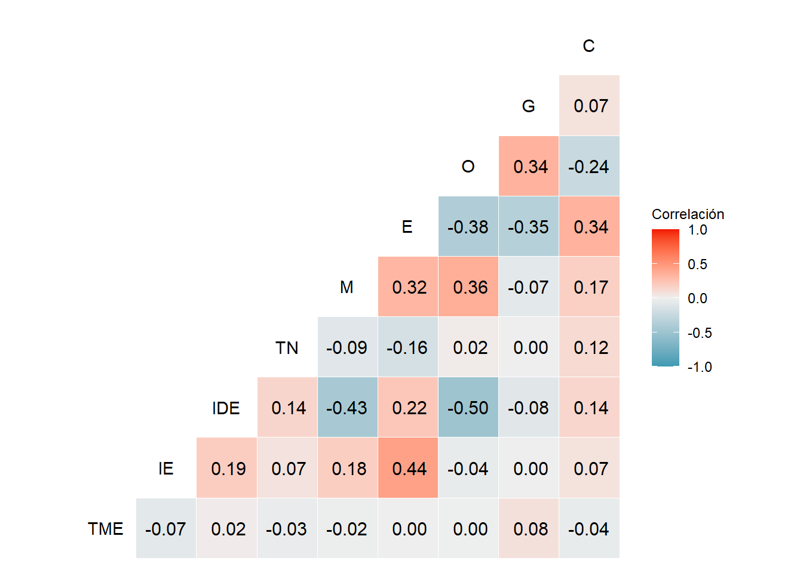
Conclusión: Podemos visualizar que TME se correlaciona positivamente de forma débil con: IDE y G. Con O y E la correlación es cero y con IE, TN, M y C la correlación es negativa y débil.
Esto ya nos permite responder cuáles AP presentan valores centrales mayores o menores, cuáles tienen mayor variabilidad y en cuáles predominan los ceros.
BOXPLOT DE TME SEGÚN AP:
ggplot(Datos, aes(x = AP, y = TME)) +geom_boxplot() +labs(title ="Distribución de TME según AP",x ="Área Programa (AP)",y ="Tasa estandarizada de mortalidad (TME)" ) +theme_minimal() +theme(axis.text.x =element_text(angle =45,hjust =1 ) )
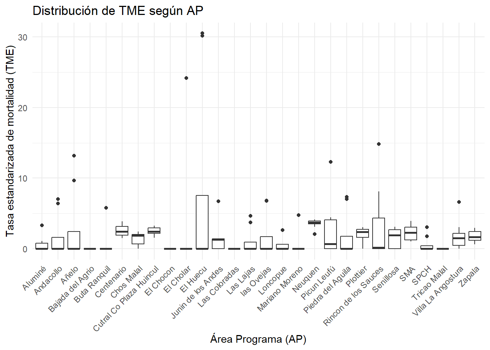
Conclusión: Hay algunas AP donde TME está muy concentrada en 0 o valores cercanos a 0, mientras que otras presentan valores centrales más elevados. También se observan diferencias importantes en la dispersión.
Hay zonas donde aparecen valores extremos como: El Huecú (presenta observaciones ceranas a 30), El Cholar (cercana a 24), Rincon de los Sauces, Añelo y Picún Leufú. Estos valores explican parte de la fuerte asimetría que vimos en la distribución global de TME.
# A tibble: 28 × 3
# Groups: AP [28]
AP Año TME
<fct> <int> <dbl>
1 El Huecu 2014 30.5
2 El Cholar 2013 24.1
3 Rincon de los Sauces 2011 14.8
4 Añelo 2017 13.2
5 Picun Leufú 2011 12.3
6 Piedra del Aguila 2013 7.33
7 Andacollo 2010 7.01
8 las Ovejas 2016 6.85
9 Junin de los Andes 2012 6.72
10 Villa La Angostura 2010 6.62
# ℹ 18 more rows
BOXPLOT DE CÓMO SE MODIFICA A LO LARGO DE LOS AÑOS POR AP.
# A tibble: 56 × 3
# Groups: AP [28]
AP Año TME
<fct> <int> <dbl>
1 El Huecu 2014 30.5
2 El Cholar 2013 24.1
3 Rincon de los Sauces 2011 14.8
4 Añelo 2017 13.2
5 Picun Leufú 2011 12.3
6 Piedra del Aguila 2013 7.33
7 Andacollo 2010 7.01
8 las Ovejas 2016 6.85
9 Junin de los Andes 2012 6.72
10 Villa La Angostura 2010 6.62
# ℹ 46 more rows
El Índice de Dependencia Económica (IDE) mide la proporción de la población teóricamente inactiva o dependiente (niños/as y adultos mayores) en relación con la población potencialmente activa (en edad de trabajar).
# Tabla resumen del IDE por Zona Sanitariaresumen_ide <- Datos %>%group_by(ZS) %>%summarise(`IDE Promedio`=mean(IDE, na.rm =TRUE),`IDE Mediana`=median(IDE, na.rm =TRUE),`TME Promedio`=mean(TME, na.rm =TRUE),.groups ="drop" ) %>%arrange(desc(`IDE Promedio`))kable(resumen_ide, digits =2, caption ="Índice de Dependencia Económica y Mortalidad por Zona Sanitaria")
Índice de Dependencia Económica y Mortalidad por Zona Sanitaria
ZS
IDE Promedio
IDE Mediana
TME Promedio
II
55.48
54.66
1.75
V
52.38
51.05
2.20
III
51.90
52.49
1.42
IV
51.65
50.79
1.44
I
51.51
51.96
1.59
VI
48.81
48.45
2.81
# Gráfico de Boxplotggplot(Datos, aes(x =reorder(ZS, -IDE), y = IDE, fill = ZS)) +geom_boxplot(alpha =0.7, show.legend =FALSE) +labs(title ="Distribución del Índice de Dependencia Económica (IDE) por Zona Sanitaria",subtitle ="Valores más altos indican mayor proporción de población dependiente",x ="Zona Sanitaria",y ="IDE (%)" ) +theme_minimal()
#Tabla de datos sobre Independencia económica respecto a las zonas #Media, mediana y desvío estándar: Datos %>%group_by(ZS) %>%summarise(media_IDE =mean(IDE, na.rm=TRUE),mediana_IDE =median(IDE, na.rm=TRUE),sd_IDE =sd(IDE, na.rm=TRUE))
# A tibble: 6 × 4
ZS media_IDE mediana_IDE sd_IDE
<fct> <dbl> <dbl> <dbl>
1 I 51.5 52.0 2.52
2 II 55.5 54.7 3.55
3 III 51.9 52.5 2.27
4 IV 51.6 50.8 3.86
5 V 52.4 51.0 4.09
6 VI 48.8 48.4 1.50
Conclusión: Podemos visualizar que el que mayor tiene variabilidad en cuanto a la dependencia económica es la ZONA V. También, observamos que el que posee mayor dependencia económica es la ZONA II
En Zonas Rurales/Interior (ej. Zona II y V): Presentan los valores más elevados de IDE. Una elevada dependencia económica implica menor autonomía financiera en las familias y mayor dependencia absoluta de la cobertura pública de salud para traslados y estudios de alta complejidad.
En Zona VI (Capital): Presenta el IDE más bajo de la provincia, lo que refleja una estructura poblacional concentrada en edades productivas. Sin embargo, registra la TME más alta, lo que confirma que el riesgo epidemiológico no siempre coincide de forma directa con la vulnerabilidad económica, debido a factores como mayor esperanza de vida, densidad poblacional y hábitos de diagnóstico.
¿Cómo evoluciona la tasa de natalidad entre 2010 y 2017 según Zona Sanitaria?
TN_zona_anio <- Datos %>%group_by(Año, ZS) %>%summarise(TN_media =mean(TN),.groups ="drop" )TN_zona_anio
# A tibble: 48 × 3
Año ZS TN_media
<int> <fct> <dbl>
1 2010 I 21.8
2 2010 II 22.7
3 2010 III 18.1
4 2010 IV 20.8
5 2010 V 23.1
6 2010 VI 24.2
7 2011 I 28.2
8 2011 II 18.4
9 2011 III 13.4
10 2011 IV 18.4
# ℹ 38 more rows
ggplot(TN_zona_anio,aes(x = Año, y = TN_media)) +geom_line(linewidth =1) +geom_point(size =2) +facet_wrap(~ ZS, ncol =2) +scale_x_continuous(breaks =2010:2017) +labs(title ="Evolución de la Tasa de Natalidad según Zona Sanitaria",subtitle ="Período 2010-2017",x ="Año",y ="Tasa de Natalidad media" ) +theme_minimal()
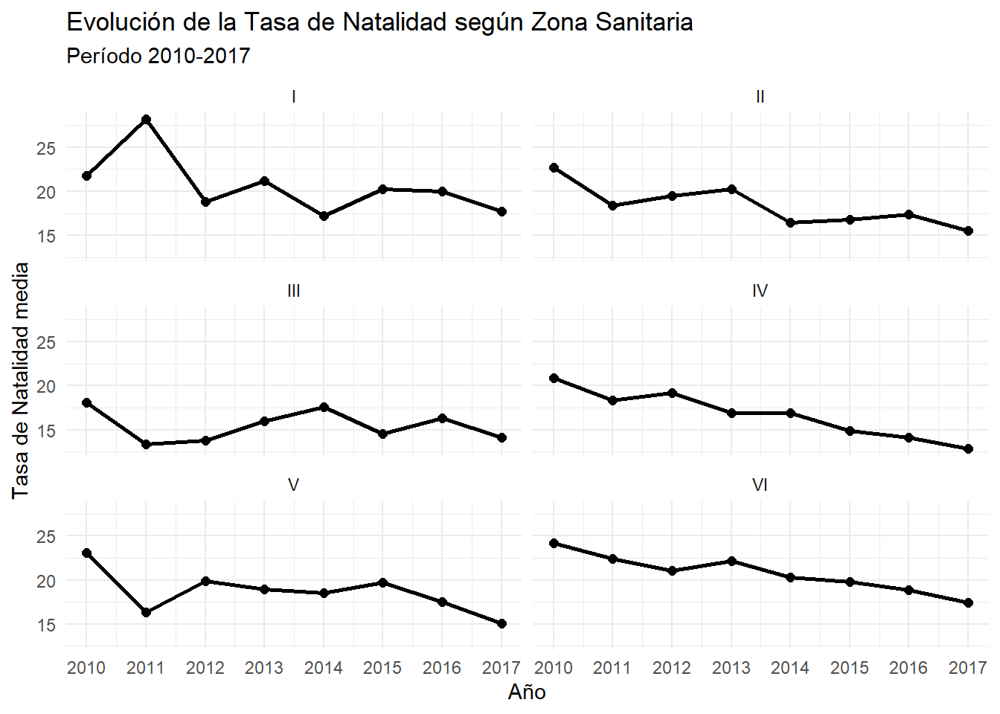
Conclusión: En general, se observa una tendencia descendente, aunque con diferencias entre zonas.
La Zona I es la más fluctuante: aumenta fuertemente en 2011, disminuye en 2012, presenta algunos repuntes posteriores y termina 2017 por debajo del nivel de 2010. La Zona II muestra una disminución más gradual, aunque con cierta estabilidad entre 2011-2013 y 2014-2016. La Zona III no presenta una caída tan uniforme: disminuye inicialmente, aunque entre 2013-2014 y vuelve a descender posteriormente.
Las zonas IV y VI muestran los patrones descendentes visualmente más claros. En ambas, la TN de 2017 es sensiblemente menor que la observada en 2010. La Zona V también termina con una TN menor, aunque presenta oscilaciones intermedias.
¿LA DISMINUCIÓN DE LA TASA DE NATALIDAD ESTÁ RELACIONADA CON LA TME?
ggplot(Datos, aes(x = TN, y = TME)) +geom_point(alpha =0.6) +geom_smooth(se =FALSE) +labs(title ="Relación entre la tasa de natalidad y TME",x ="Tasa de natalidad (TN)",y ="Tasa estandarizada de mortalidad (TME)" ) +theme_minimal()
`geom_smooth()` using method = 'loess' and formula = 'y ~ x'
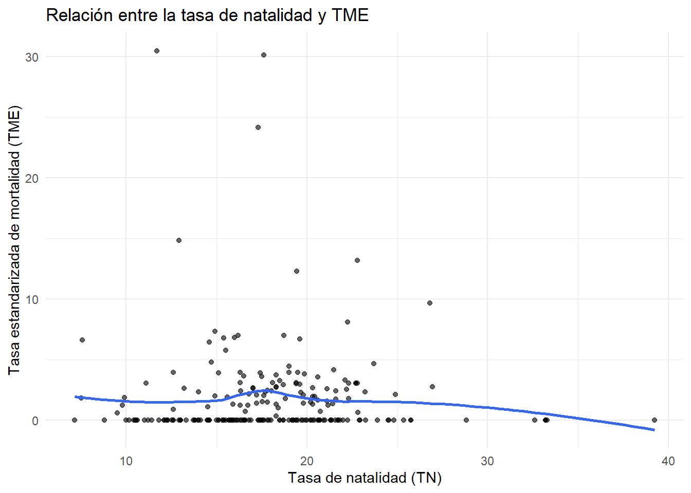
CONCLUSIÓN: relación entre tasa de natalidad y TME.
El diagrama de dispersión no evidencia visualmente una asociación fuerte entre la tasa de natalidad y la TME. Se observa una elevada concentración de registros con TME igual a cero o con valores bajos para diferentes niveles de natalidad, junto con algunas observaciones de TME considerablemente elevadas.
IDENTIFICAR LAS ÁREAS PRIORITARIAS DE INTERVENCIÓN (necesitan prioridad de intervención):
Creamos un indicador de prioridad, en el cual combinamos la Tasa de Mortalidad por Cáncer de Mama (TME) con los indicadores de oferta/uso de salud: Consultas por habitante (C) y Densidad de médicos/as (M).
El índice de prioridad se calcula mediante la estandarización (Z-score) de las variables:
Índice de Prioridad = Z_TME - Z_C - Z_M
Un puntaje mayor indica un escenario crítico: alta mortalidad junto a una baja oferta o cobertura de salud.